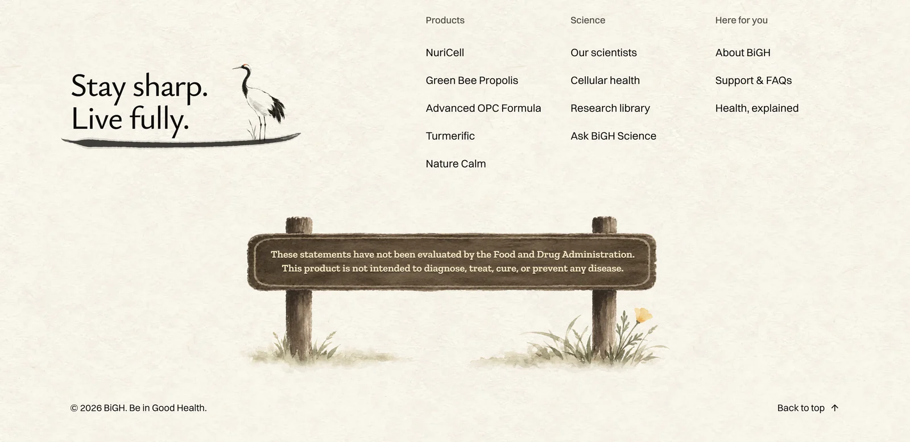
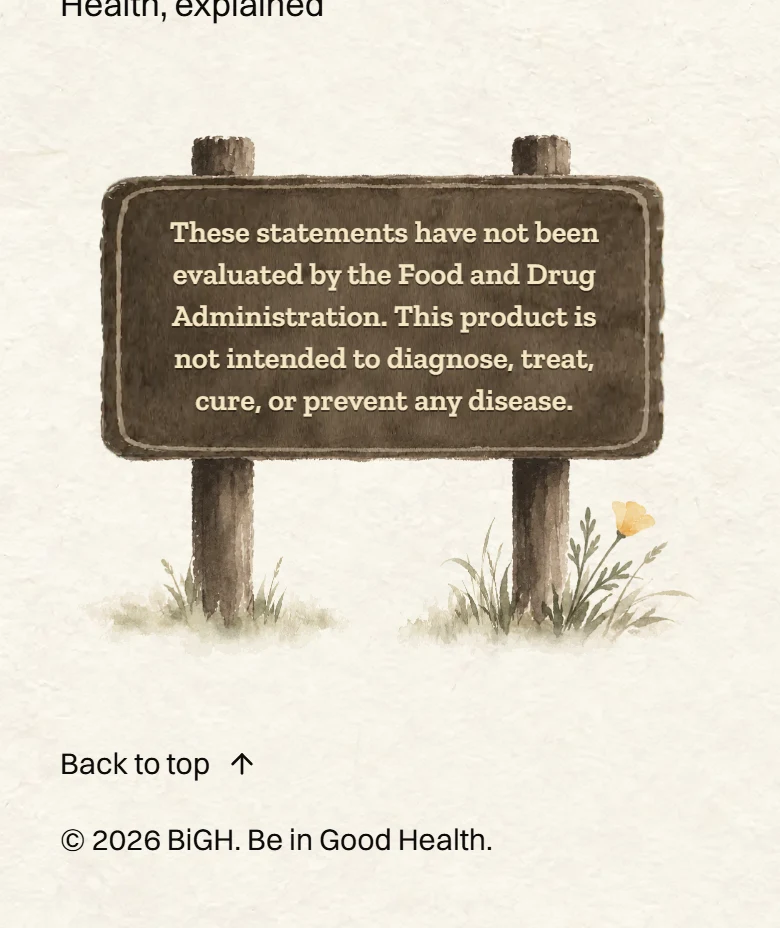
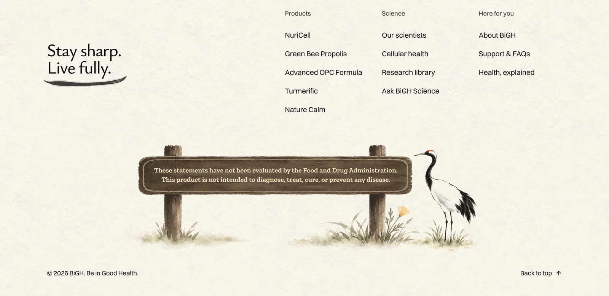
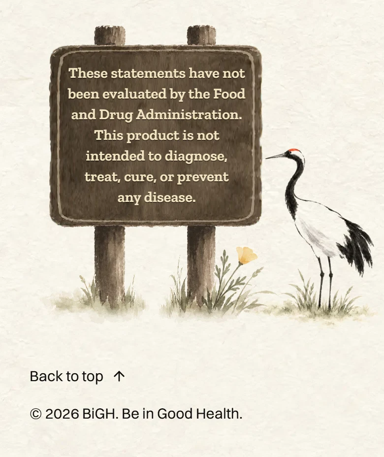
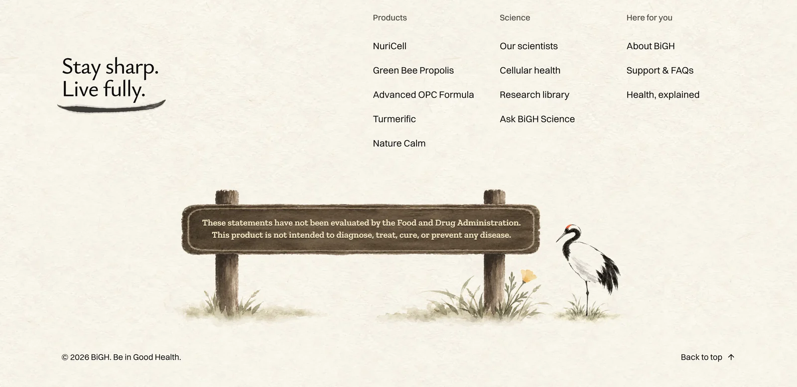
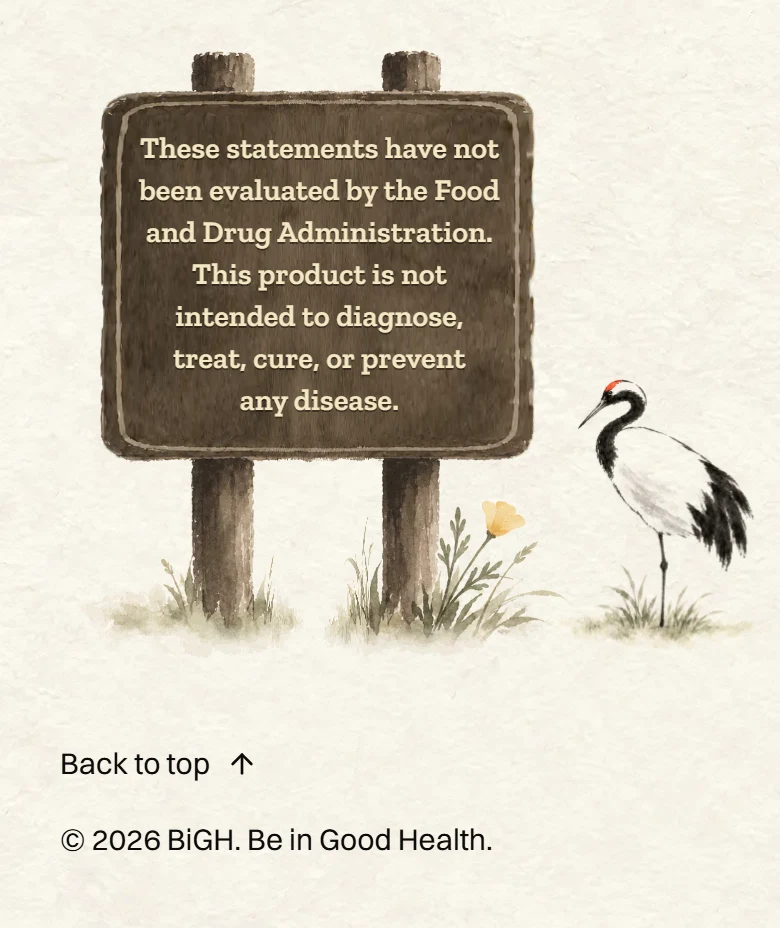
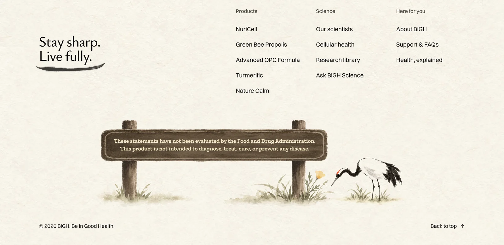
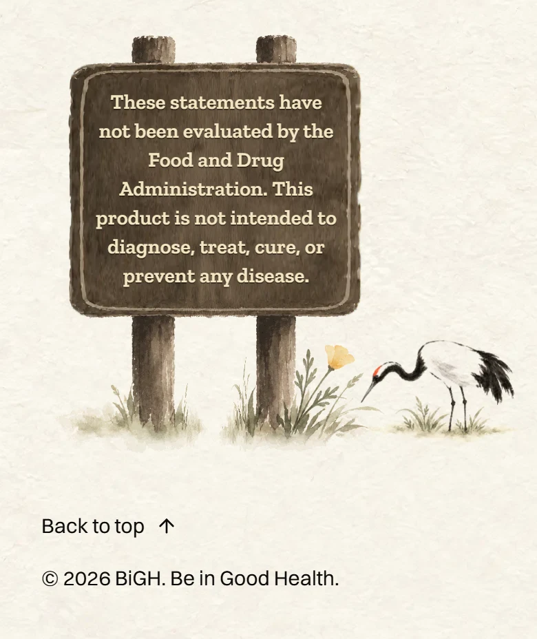
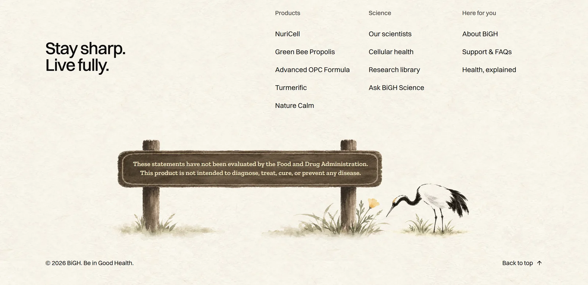

<title>Crane by the Sign</title>
<meta name="claude:viewport-fit-sides" content="cover">
<link rel="preconnect" href="https://fonts.googleapis.com">
<link rel="preconnect" href="https://fonts.gstatic.com" crossorigin>
<link rel="stylesheet" href="https://fonts.googleapis.com/css2?family=Ysabeau:wght@500;600&family=Figtree:wght@400;500;600&display=swap">
<style>
  /* Layout: one column of paper "plates", each a choice: the computer view wide, the phone view beside it (stacked on phones).
     Single look on purpose: rice paper and sumi ink, the site's own world, so the screenshots sit on the paper they were made for. */
  :root {
    --paper: #f5f1e6;
    --plate: #fbf8ef;
    --ink: #1f1d1a;
    --ink-soft: #5b564d;
    --rule: #ddd5c3;
    --gold: #a8812f;
    --display: "Ysabeau", "Iowan Old Style", Georgia, serif;
    --body: "Figtree", "Segoe UI", system-ui, sans-serif;
    color-scheme: light;
  }
  body {
    background: var(--paper);
    color: var(--ink);
    font-family: var(--body);
    font-size: 17px;
    line-height: 1.5;
  }
  .wrap {
    max-width: 1080px;
    margin: 0 auto;
    padding-block: 40px 64px;
    padding-left: max(16px, env(safe-area-inset-left, 0px));
    padding-right: max(16px, env(safe-area-inset-right, 0px));
    display: grid;
    gap: 28px;
  }
  header { display: grid; gap: 8px; max-width: 62ch; }
  h1 {
    font-family: var(--display);
    font-weight: 600;
    font-size: clamp(34px, 6vw, 48px);
    line-height: 1.05;
    margin: 0;
    text-wrap: balance;
  }
  header p { margin: 0; color: var(--ink-soft); }
  .plate {
    background: var(--plate);
    border: 1px solid var(--rule);
    border-radius: 6px;
    padding: 20px;
    display: grid;
    gap: 14px;
  }
  .plate.pick { border-color: var(--gold); box-shadow: 0 0 0 1px var(--gold); }
  .head { display: flex; flex-wrap: wrap; align-items: baseline; gap: 6px 14px; }
  .letter { font-family: var(--display); font-weight: 600; font-size: 36px; line-height: 1; }
  .name { font-family: var(--display); font-weight: 600; font-size: 26px; line-height: 1.15; margin: 0; }
  .score { font-weight: 600; font-variant-numeric: tabular-nums; color: var(--ink-soft); margin-left: auto; }
  .tag { font-size: 13px; font-weight: 600; letter-spacing: 0.06em; text-transform: uppercase; color: var(--gold); }
  .what { margin: 0; max-width: 62ch; }
  .back { margin: 0; color: var(--ink-soft); font-size: 15px; max-width: 62ch; }
  .views { display: grid; grid-template-columns: minmax(0, 2.4fr) minmax(0, 1fr); gap: 14px; align-items: start; }
  figure { margin: 0; display: grid; gap: 6px; min-width: 0; }
  figure img { display: block; width: 100%; height: auto; border-radius: 4px; border: 1px solid var(--rule); }
  figcaption { font-size: 13px; color: var(--ink-soft); }
  .now .name, .also .name { font-size: 22px; }
  footer { color: var(--ink-soft); font-size: 15px; max-width: 62ch; display: grid; gap: 6px; }
  footer p { margin: 0; }
  @media (max-width: 720px) {
    .views { grid-template-columns: minmax(0, 1fr); }
    .views figure.phone { max-width: 320px; }
    .plate { padding: 16px; }
  }
</style>

<main class="wrap">
  <header>
    <h1>The crane by the park sign</h1>
    <p>The crane leaves the words and stands in the grass beside the sign. Three poses, painted in the homepage crane's hand. On the homepage its crown is red, like the homepage's spring colours. On every other page it is gold.</p>
  </header>

  <section class="plate now">
    <div class="head">
      <h2 class="name">Now</h2>
      <span class="tag">For comparison</span>
    </div>
    <p class="back">The crane stands beside the words. The sign stands alone at the bottom.</p>
    <div class="views">
      <figure><figcaption>Homepage, computer</figcaption></figure>
      <figure class="phone"><figcaption>Homepage, phone</figcaption></figure>
    </div>
  </section>

  <section class="plate">
    <div class="head">
      <span class="letter">A</span>
      <h2 class="name">Reading the sign</h2>
      <span class="score">8/10</span>
    </div>
    <p class="what">It stands tall and faces the sign, its beak at the end of the plank. It looks most like the homepage crane.</p>
    <p class="back">Holds it back: it can look like it is reading the fine print, which is a little funny.</p>
    <div class="views">
      <figure><figcaption>Homepage, computer</figcaption></figure>
      <figure class="phone"><figcaption>Homepage, phone</figcaption></figure>
    </div>
  </section>

  <section class="plate">
    <div class="head">
      <span class="letter">B</span>
      <h2 class="name">Resting on one leg</h2>
      <span class="score">7.5/10</span>
    </div>
    <p class="what">It rests on one leg, neck drawn in, like a bird at the end of a long walk.</p>
    <p class="back">Holds it back: it is the smallest of the three and does not turn to the sign, so it reads as a bird that happens to be nearby.</p>
    <div class="views">
      <figure><figcaption>Homepage, computer</figcaption></figure>
      <figure class="phone"><figcaption>Homepage, phone</figcaption></figure>
    </div>
  </section>

  <section class="plate pick">
    <div class="head">
      <span class="letter">C</span>
      <h2 class="name">Looking at the poppy</h2>
      <span class="tag">My pick</span>
      <span class="score">8.5/10</span>
    </div>
    <p class="what">It bends down to look at the California poppy by the post. A small, living moment at the end of the page: stop and look.</p>
    <p class="back">Holds it back: on a phone the crane draws smaller, so the sign keeps its width.</p>
    <div class="views">
      <figure><figcaption>Homepage, computer</figcaption></figure>
      <figure class="phone"><figcaption>Homepage, phone</figcaption></figure>
    </div>
  </section>

  <section class="plate also">
    <div class="head">
      <h2 class="name">C on another page</h2>
      <span class="tag">Gold crown</span>
    </div>
    <p class="back">The Science page, where the crane keeps its gold crown.</p>
    <div class="views">
      <figure><figcaption>Science, computer</figcaption></figure>
      <figure class="phone"><figcaption>Science, phone</figcaption></figure>
    </div>
  </section>

  <footer>
    <p>In all three, "Stay sharp. Live fully." stands alone, a size smaller. On a phone the sign gets a little narrower (7 lines instead of 5) to make room for the crane.</p>
    <p>Homepage only: the long brush line still ends in a short stroke under the words. It used to be the ground the crane stood on. Now it reads as an underline.</p>
    <p>These are mockups: the real pages with the new crane laid on top. Nothing on the site has changed.</p>
  </footer>
</main>
